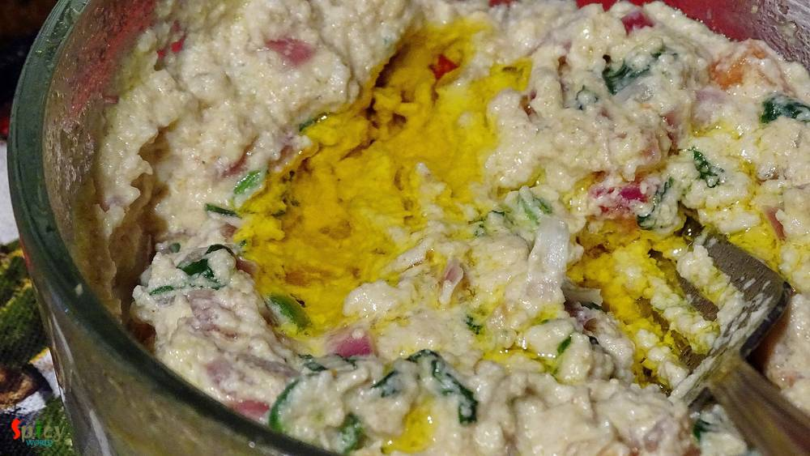

Simple and Easy Recipes
Bhapa Posto
© 2016 Spicy World, Published on: Nov 28, 2015
I think almost every Bengali is familiar with this name. I love 'posto' or poppy seeds in any form. I made this dish on yesterday lunch along with some steamed rice. The fresh flavour of mustard oil and poppy seed paste always makes me crazy. I made it in microwave but you can also make this in oven. Try this in your kitchen and let me know how it turns out.

Ingredients
- 6 Tablespoons of poppy seeds.
- 3 Teaspoons of chopped onion.
- 3 chopped green chilies.
- 1 Teaspoon chopped tomato.
- 3 Teaspoons of chopped coriander leaves.
- 3 Tablespoons of mustard oil.
- Salt.
- Water.

Steps
Soaked the poppy seeds in 7-8 Tablespoons of water for 2-3 hours. You can also soak it in milk.
Then grind them to a very smooth paste.
Put the paste in a oven proof bowl.
Add onion, green chilies, tomato and coriander leaves into the paste. Mix it with a spoon.
Then add some salt and mustard oil. Again mix it.
Put the bowl in the micriwave with lid. Cover the bowl half with the lid.
Now turn on the oven for 3 minutes.
Take it out and mix with a spoon.
Again put it in the oven for 2-3 minutes. After that posto will be ready. Before serving drizzle some more mustard oil.
The more you add water in the paste, the more time it will take to cook.
Your bhapa posto is ready ...
Serve hot with some plain rice ...
")